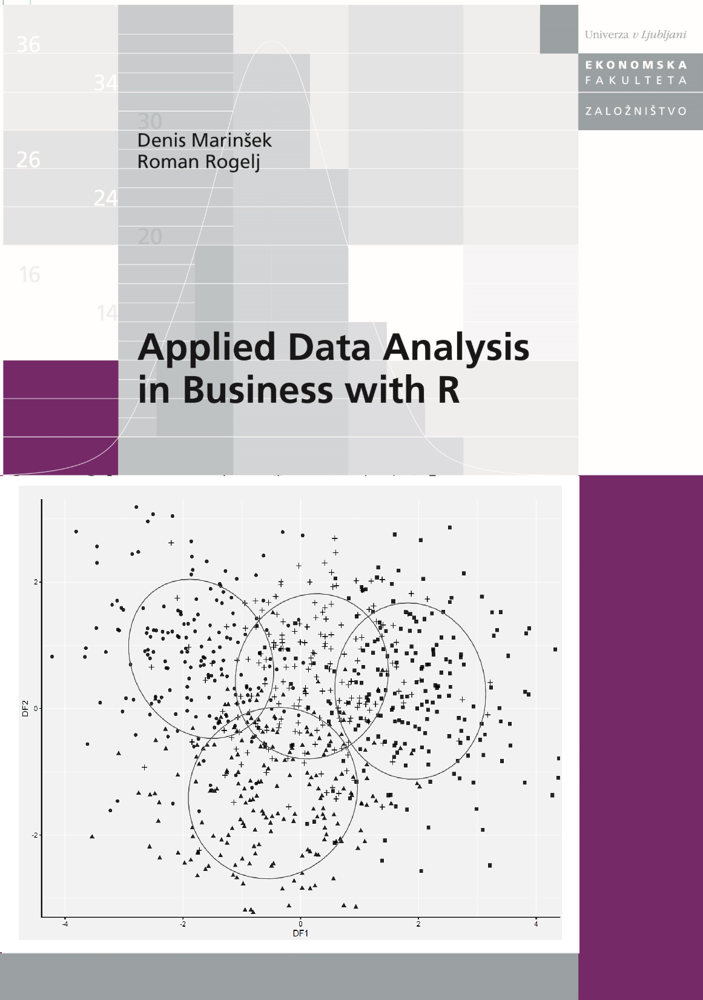

Applied Data Analysis in Business with R

The textbook Applied Data Analysis in Business with R was published in 2026. It covers a brief introduction to R, descriptive statistics, hypothesis testing, correlation and association, regression analysis, logistic regression, principal component analysis, factor analysis, clustering, and discriminant analysis.
PODATKI / DATA
Spoznavanje multivariatne analize s programom R

Učbenik Spoznavanje multivariatne analize s programom R je bil izdan leta 2022. Učbenik je namenjen podiplomskim študentom in vključuje metodo glavnih komonent, faktorsko analizo, binarno logistično regresijo, analizo zgodovine dogodkov, hierarhično regresijo in razvrščanje enot v skupine.
PODATKI / DATA
Spoznavanje statistične analize s programom R

Učbenik Spoznavanje statistične analize s programom R je bil izdan leta 2021. Učbenik je namenjen dodiplomskim študentom in vključuje uvod v analizo podatkov, ocenjevanje parametrov, statistično preizkušanje domnev, korelacijsko in regresijsko analizo, analizo kategorialnih spremenljivk in analizo časovnih vrst.